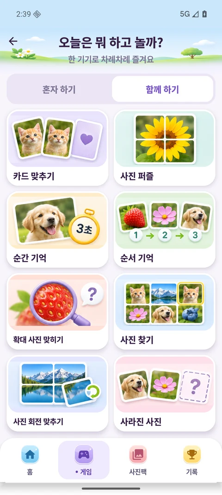
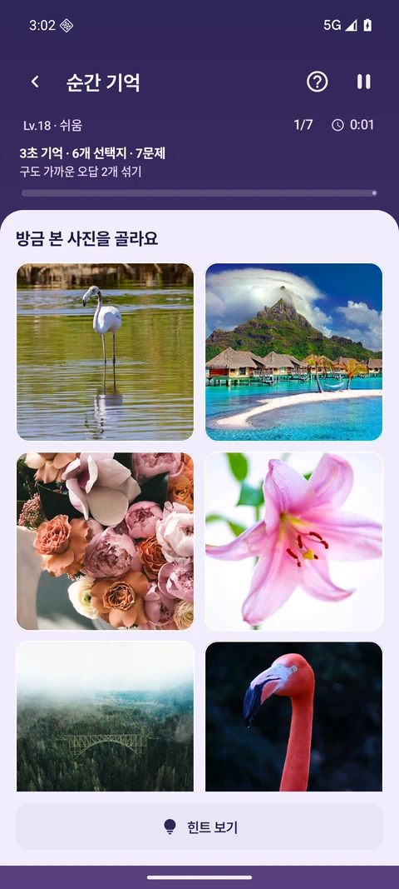
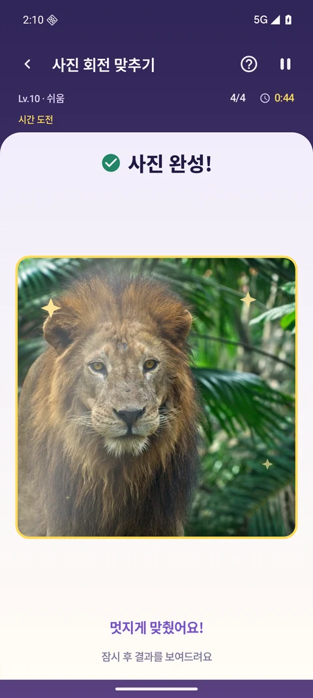

화면 둘러보기
시작하는 순간부터 함께 웃는 결과까지.
사진을 누르면 더 크게 볼 수 있어요.
개발 과정에서 촬영한 실제 앱 화면입니다. 화면 속 문구·레벨·예시 결과는 현재 버전과 다를 수 있습니다.

반가워요, 사진게임


오늘은 어떤 게임?

한 조각씩 완성하는 재미

잠깐 보고, 기억해요


조금 전 사진을 찾아요


사진 완성!

우리 함께 시작해요

이번 판의 주인공은?
한국어 이미지는 제공된 실제 캡처 원본이며, 일부 함께 하기 화면에 남아 있는 과거 문구와 달리 현재는 참가자마다 다른 문제를 출제합니다.